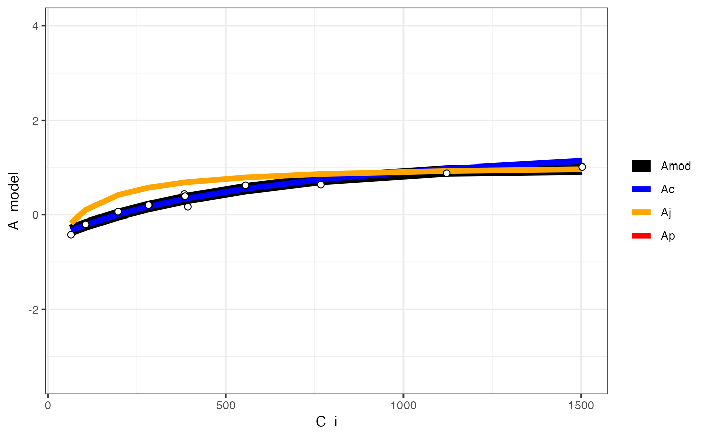

compile_data.RdCompiling outputs from lists
compile_data(data, output_type = "list", list_element)
| data | List of elements |
|---|---|
| output_type | Type of desired output. For graphs or models, use "list", for parameters, use "dataframe". |
| list_element | Which elements of the sublists do you wish to compile? |
compile_data converts the outputs of fit_many into a form more readily useable for analysis. Can be used to create dataframe of all fitted parameters, a list of model outputs, a list of graphs for plotting. This function is NOT restricted to compiling outputs from plantecophystools but could be used to compile elements from ANY list of lists.
# \donttest{ #Read in your data #Note that this data is coming from data supplied by the package #hence the complicated argument in read.csv() #This dataset is a CO2 by light response curve for a single sunflower data <- read.csv(system.file("extdata", "A_Ci_Q_data_1.csv", package = "photosynthesis")) #Define a grouping factor based on light intensity to split the ACi #curves data$Q_2 <- as.factor((round(data$Qin, digits = 0))) #Convert leaf temperature to K data$T_leaf <- data$Tleaf + 273.15 #Fit many curves fits <- fit_many(data = data, varnames = list(A_net = "A", T_leaf = "T_leaf", C_i = "Ci", PPFD = "Qin"), funct = fit_aci_response, group = "Q_2")#> | | | 0% | |========= | 12% | |================== | 25% | |========================== | 38% | |=================================== | 50% | |============================================ | 62% | |==================================================== | 75% | |============================================================= | 88% | |======================================================================| 100%#Compile graphs into a list for plotting fits_graphs <- compile_data(fits, list_element = 2) #Plot one graph from the compiled list plot(fits_graphs[[1]])#> Warning: Removed 12 row(s) containing missing values (geom_path).# }